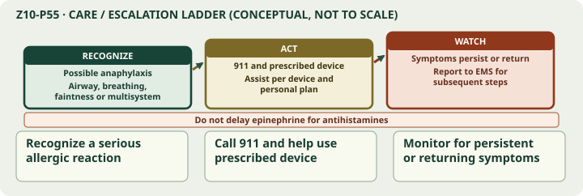

Z10-P55 · Wilderness medicine · New manuscript
Recognize anaphylaxis and assist with a patient's prescribed epinephrine
Spot rapidly fatal multi-system allergic reactions and support timely use of the patient's own prescribed auto-injector plus 911 activation.
When it applies · Sudden severe allergic reaction to stings, foods, medications, or latex causing hives plus breathing, throat, stomach, or blood-pressure signs.
Equipment · Patient's own prescribed unexpired epinephrine auto-injector (if carried), watch, and 911 communication.

Actions
- Recognize anaphylaxis immediately when exposure triggers ANY airway/breathing sign (swollen lips/tongue/throat, hoarseness, wheezing, trouble breathing), dizziness/fainting, widespread hives/flushing, or severe cramps/vomiting.[M08, T02]
- Call 911 immediately and assist the patient in administering their OWN prescribed epinephrine auto-injector into the outer mid-thigh strictly per the device label (can go through light clothing); log exact injection time.[M08, M20]
- Do NOT delay epinephrine waiting for oral antihistamines to work, never use someone else's prescription without direct clinician/dispatcher authorization, and keep the patient lying flat (or seated upright if breathing is easier—never suddenly standing).[M08, M05]
Failure recognition · Giving an over-the-counter antihistamine and waiting thirty minutes while throat swelling progresses to complete airway closure.[M08]
Verify · Confirm 911 is dispatched, exact auto-injector time is recorded, and breathing/alertness are tracked continuously.[M08, M20]
Stop or change course · If severe symptoms fail to improve or worsen after 5 to 15 minutes and the patient carries a second prescribed dose, follow the device/dispatcher directions and expedite EMS transport.[M08, T02]
Evidence and editorial notes
- M05 · NIH / MedlinePlus · Shock (current web edition)
- Section: Recognizing Circulatory Shock and Positioning · Conditions: Injured or ill patient with pale cool clammy skin, rapid weak pulse, confusion, or dizziness
Support: Treat suspected shock as a life-threatening emergency: call 911, control external bleeding, keep the person warm and insulated from cold ground, and do not give food or drink.
Limitations: Field responders cannot diagnose internal hemorrhage or administer IV fluids. · Conflicting evidence: None; reinforces keeping suspected shock patients NPO and warm.
Editorial note: Core shock recognition and stabilization boundary in Z10. · Specialist reviewer: Emergency and wilderness medicine
Primary source · checked 2026-11-24 - M08 · NIH / MedlinePlus · Anaphylaxis (current web edition)
- Section: Recognizing Anaphylaxis and Prescribed Epinephrine Use · Conditions: Sudden severe allergic reaction (hives, facial/airway swelling, wheezing, dizziness, vomiting)
Support: Call 911 immediately for suspected anaphylaxis and assist the patient in using their own prescribed epinephrine auto-injector per its label; symptoms can rebound requiring hospital observation.
Limitations: Lay responders never prescribe or supply unprescribed epinephrine or substitute antihistamines for emergency activation. · Conflicting evidence: None; aligns with AAAAI/MedlinePlus guidance.
Editorial note: Separates assisting with a patient's prescribed auto-injector from lay prescribing. · Specialist reviewer: Allergy/immunology and EMS
Primary source · checked 2026-11-24 - M20 · NIH / MedlinePlus · First Aid Overview (current web edition)
- Section: Lay First-Aid Scope, Kit Readiness, and Documentation · Conditions: Pre-trip kit preparation and remote patient monitoring
Support: Maintain an inspected, unexpired first-aid kit matched to your actual training, keep written patient observations (time, responsiveness, breathing, symptoms, interventions) for EMS handoff, and practice skills in certified courses.
Limitations: Carrying advanced medical instruments without clinical training adds risk rather than capability. · Conflicting evidence: None; aligns with ARC and NPS-K.
Editorial note: Anchors kit sizing, SOAP-style lay observation logs, and scope-of-practice cards. · Specialist reviewer: Wilderness EMS and clinical education
Primary source · checked 2026-11-24 - T02 · American Red Cross · First Aid Steps (current web edition)
- Section: First Aid Steps > Call 9-1-1 · Conditions: Lay emergency response to unresponsiveness, abnormal breathing or severe bleeding
Support: Activate EMS and get needed equipment. Follow dispatcher directions and act within training.
Limitations: Remote locations may delay EMS arrival, requiring sustained stabilization after activation. · Conflicting evidence: None; aligns with NPS-E.
Editorial note: Mandates early emergency activation and dispatcher adherence. · Specialist reviewer: EMS and wilderness medicine
Primary source · checked 2026-11-24
Source lineage · NIH MedlinePlus Anaphylaxis; new manuscript · Classification · New manuscript.